DE Analysis
Ha Tran
22/08/2021
Last updated: 2021-10-31
Checks: 7 0
Knit directory: 01_CKI_DGE/1_analysis/
This reproducible R Markdown analysis was created with workflowr (version 1.6.2). The Checks tab describes the reproducibility checks that were applied when the results were created. The Past versions tab lists the development history.
Great! Since the R Markdown file has been committed to the Git repository, you know the exact version of the code that produced these results.
Great job! The global environment was empty. Objects defined in the global environment can affect the analysis in your R Markdown file in unknown ways. For reproduciblity it’s best to always run the code in an empty environment.
The command set.seed(12345) was run prior to running the code in the R Markdown file. Setting a seed ensures that any results that rely on randomness, e.g. subsampling or permutations, are reproducible.
Great job! Recording the operating system, R version, and package versions is critical for reproducibility.
Nice! There were no cached chunks for this analysis, so you can be confident that you successfully produced the results during this run.
Great job! Using relative paths to the files within your workflowr project makes it easier to run your code on other machines.
Great! You are using Git for version control. Tracking code development and connecting the code version to the results is critical for reproducibility.
The results in this page were generated with repository version 70049b2. See the Past versions tab to see a history of the changes made to the R Markdown and HTML files.
Note that you need to be careful to ensure that all relevant files for the analysis have been committed to Git prior to generating the results (you can use wflow_publish or wflow_git_commit). workflowr only checks the R Markdown file, but you know if there are other scripts or data files that it depends on. Below is the status of the Git repository when the results were generated:
Ignored files:
Ignored: .Rhistory
Ignored: .Rproj.user/
Ignored: 2_plots/3_go/
Untracked files:
Untracked: 1_analysis/about.html
Untracked: 1_analysis/figure/kegg.Rmd/completePathway-1.png
Untracked: 1_analysis/figure/kegg.Rmd/partialPathway-1.png
Untracked: 1_analysis/figure/setUp.Rmd/afterFiltering-2.png
Untracked: 1_analysis/kegg.html
Untracked: 1_analysis/site_libs/
Untracked: 2_plots/4_kegg/
Untracked: Rplot.png
Untracked: Rplot01.png
Unstaged changes:
Modified: 1_analysis/kegg.Rmd
Modified: 2_plots/2_dge/qlf_pValue_histogram_CKI-Mac vs CKI.svg
Modified: 2_plots/2_dge/qlf_pValue_histogram_CKI-Nme vs CKI.svg
Modified: 2_plots/2_dge/qlf_pValue_histogram_CKI-Omt vs CKI.svg
Modified: 2_plots/2_dge/qlf_pValue_histogram_CKI-Tri vs CKI.svg
Modified: 2_plots/2_dge/qlf_pValue_histogram_UT vs CKI.svg
Modified: 2_plots/2_dge/treat_pValue_histogram_CKI-Mac vs CKI.svg
Modified: 2_plots/2_dge/treat_pValue_histogram_CKI-Nme vs CKI.svg
Modified: 2_plots/2_dge/treat_pValue_histogram_CKI-Omt vs CKI.svg
Modified: 2_plots/2_dge/treat_pValue_histogram_CKI-Tri vs CKI.svg
Modified: 2_plots/2_dge/treat_pValue_histogram_UT vs CKI.svg
Modified: 3_output/enrichKEGG_treat_unfiltered.xlsx
Modified: 3_output/qlf_filtered.xlsx
Modified: 3_output/treat_filtered.xlsx
Note that any generated files, e.g. HTML, png, CSS, etc., are not included in this status report because it is ok for generated content to have uncommitted changes.
These are the previous versions of the repository in which changes were made to the R Markdown (1_analysis/dge.Rmd) and HTML (docs/dge.html) files. If you’ve configured a remote Git repository (see ?wflow_git_remote), click on the hyperlinks in the table below to view the files as they were in that past version.
| File | Version | Author | Date | Message |
|---|---|---|---|---|
| Rmd | 70049b2 | Ha Tran | 2021-10-31 | Remove old GO and KEGG code, adjusted directory paths, updated KEGG, minor cosmetic changes |
| html | 70049b2 | Ha Tran | 2021-10-31 | Remove old GO and KEGG code, adjusted directory paths, updated KEGG, minor cosmetic changes |
| Rmd | 6823b3c | Ha Tran | 2021-10-30 | Add minor cosmetic changes |
| html | 6823b3c | Ha Tran | 2021-10-30 | Add minor cosmetic changes |
| Rmd | 7a6571b | Ha Tran | 2021-10-30 | minor changes |
| html | 7a6571b | Ha Tran | 2021-10-30 | minor changes |
| html | f5f4f74 | Ha Tran | 2021-10-30 | please please please |
| Rmd | f94a382 | Ha Tran | 2021-10-30 | rerun website building to no avail. will it still work on github? |
| Rmd | a6d8f8a | Ha Tran | 2021-10-30 | what is happening |
| html | a6d8f8a | Ha Tran | 2021-10-30 | what is happening |
| Rmd | d769a7c | Ha Tran | 2021-10-30 | Upload GO and KEGG analysis |
| html | d769a7c | Ha Tran | 2021-10-30 | Upload GO and KEGG analysis |
| Rmd | 67e2d67 | Ha Tran | 2021-10-29 | copied code from old workflow for setup and dge |
| html | 67e2d67 | Ha Tran | 2021-10-29 | copied code from old workflow for setup and dge |
Data Setup
Load Library
# working with data
library(dplyr)
library(magrittr)
library(readr)
library(tibble)
library(reshape2)
library(tidyverse)
# Visualisation:
library(kableExtra)
library(ggplot2)
library(grid)
library(pander)
library(cowplot)
library(pheatmap)
# Custom ggplot
library(ggpubr)
library(ggbiplot)
library(ggrepel)
# Bioconductor packages:
library(edgeR)
library(limma)
library(Glimma)
# Set ggplot theme
theme_set(theme_minimal())
theme_update(
# legend.background = element_rect(fill = "transparent", colour = NA),
# legend.box.background = element_rect(fill = "transparent", colour = NA),
#
# panel.background = element_rect(fill = "transparent",colour = NA),
# plot.background = element_rect(fill = "transparent", colour = NA),
plot.title = element_text(color = "gray20", size = 28, angle = 0, hjust = 0, vjust = .5, face = "bold"),
plot.subtitle = element_text(color = "gray25", size = 24, angle = 0, hjust = 0, vjust = .5, face = "plain"),
axis.text.x = element_text(color = "gray30", size = 14, angle = 0, hjust = .5, vjust = .5, face = "plain"),
axis.text.y = element_text(color = "gray30", size = 14, angle = 0, hjust = 1, vjust = 0, face = "plain"),
axis.title.x = element_text(color = "gray30", size = 20, angle = 0, hjust = .5, vjust = 0, face = "plain"),
axis.title.y = element_text(color = "gray30", size = 20, angle = 90, hjust = .5, vjust = .5, face = "plain"))Import DGElist Data
DGElist object containing the raw feature count, sample metadata, and gene metadata, created in the Set Up stage.
# load DGElist previously created in the set up
dge <- readRDS(here::here("0_data/rds_object/dge.rds"))Differential Gene Expression Analysis
Here multiple methods of identifying differential expression will be compared. These methods include
- Generalised Linear Model (GLM) with Likelihood Ratio Test (LRT),
- Generalised Linear Model (GLM) with Quasi-likelihood F-tests (QLF), and
- Limma-voom
These methods have been internally assessed and only the GLM:QLF + TREAT method will be run
Initial Parameterisation
The varying methods used to identify differential expression all rely on similar initial parameters. These include:
- The Design Matrix,
- Estimation of Dispersion, and
- Contrast Matrix
Design Matrix
The experimental design can be parameterised in a one-way layout where one coefficient is assigned to each group. The design matrix formulated below contains the predictors of each sample
#setup desgin matrix with sample_group
designMatrix <- model.matrix(~ 0 + sample_group,
data = dge$samples)
#remove "sample_group" from each column names
colnames(designMatrix) <- gsub("sample_group",
"",
colnames(designMatrix))
#remove "S48h_" from row names
rownames(designMatrix) <- gsub("S48h_",
"",
rownames(designMatrix))
designMatrix %>% saveRDS(here::here("0_data/rds_object/designMatrix.rds"))
#display the design matrix
designMatrix %>% as.data.frame()Estimating Dispersion
The negative binomial dispersion is calculated using the bioConductor recommended method of using the estimateDisp function. This method calculates the common dispersion, trended dispersion and tagwise dispersions in one run. This function also returns the formal DGEList object but with additional entries for the negative binomial dispersion for all genes.
The dispersion can then be visualised through the plotBCV function which shows the biological coefficient of variance (BCV) of each gene
estimateDispersion <- estimateDisp(y = dge,
design = designMatrix,
robust = TRUE)
# estimateDispersion$common.dispersion
#visualisation of dispersion estimate
edgeR::plotBCV(estimateDispersion)
invisible(dev.print(svg, here::here("2_plots/2_dge/estimate_dispersion.svg")))Contrast Matrix
The contrast matrix is required to provide a coefficient to each comparison and later used to test for significant differential expression with each comparison group
# make specific contrast
contrast <- limma::makeContrasts(
Mac_vs_CKI = Mac - CKI,
Nme_vs_CKI = Nme - CKI,
Omt_vs_CKI = Omt - CKI,
Tri_vs_CKI = Tri - CKI,
UT_vs_CKI = UT - CKI,
levels = designMatrix)
colnames(contrast) <- c("CKI-Mac vs CKI", "CKI-Nme vs CKI", "CKI-Omt vs CKI", "CKI-Tri vs CKI", "UT vs CKI")
contrast %>% saveRDS(here::here("0_data/rds_object/contrastMatrix.rds"))
contrast %>% as.data.frame()#generate data frame of contrast colname for downstream analysis
comparison_group=colnames(contrast) %>% as.data.frame()Generalised Linear Model (GLM) with Quasi-likelihood F-Test (QLF)
The negative binomial model can be extended with quasi-likelihood methods to account for gene specific variablility from both biological and technical sources.
While the likelihood ratio test is a more obvious choice for inferences with GLMs, the QL F-test is preferred as it reflects the uncertainty in estimating the dispersion for each gene. It provides more robust and reliable error rate control when the number of replicates is small. The QL dispersion estimation and hypothesis testing can be done by using the functions glmQLFit() and glmQLFTest().
Fit GLM QLF model
For the QL dispersions, estimation can be performed using the glmQLFit function. This returns a DGEGLM object containing the estimated values of the GLM coefficients for each gene, as well as the fitted mean-QL dispersion trend, the squeezed QL estimates and the prior degrees of freedom (df). These can be visualized with the plotQLDisp function.
#fit NB GLMQLF model to estimatedDespersion DGElist
fit_GLM_qlf <- edgeR::glmQLFit(y = estimateDispersion,
design = designMatrix,
robust = TRUE)
#view gene coefficients
# head(fit_GLM_qlf$coefficients)
#visualise
plotQLDisp(glmfit = fit_GLM_qlf)
invisible(dev.print(svg, here::here("2_plots/2_dge/qlf_dispersion.svg")))Apply QLF test
# Create list object
qlf=list()
qlf_decideTest=list()
qlf_unfiltered=list()
qlf_filtered=list()
for (i in 1:ncol(contrast)){
#at each iteration, let x = name of each contrast group
x=comparison_group[i,]
#populate list with DGELRT object for every comparison
qlf[[x]] <-
edgeR::glmQLFTest(glmfit = fit_GLM_qlf, contrast = contrast[,x])
#populate significant list with decide test
qlf_decideTest[[x]] <-
decideTests(qlf[[x]], p.value = 0.05, adjust.method = "fdr") %>% summary()
#populate unfiltered list with list of all DE genes
qlf_unfiltered[[x]] <-
edgeR::topTags(object = qlf[[x]], n = Inf) %>% as.data.frame()
#populate filtered list with list of significant DE genes
qlf_filtered[[x]] <-
edgeR::topTags(object = qlf[[x]], n = Inf, adjust.method = "fdr", p.value = 0.05, sort.by = "PValue") %>% as.data.frame()
}
# save rds object for use in downstream GO and KEGG analysis
qlf %>% saveRDS(here::here("0_data/rds_object/qlf.rds"))
# qlf_unfiltered %>% saveRDS(file = "0_data/rds_object/qlf_unfiltered.rds")
qlf_filtered %>% saveRDS(here::here("0_data/rds_object/qlf_filtered.rds"))
#save each unfiltered comparison group in the output directory
# dont need this
# writexl::write_xlsx(x = qlf_unfiltered,
# path = here:here("3_output/qlf_unfiltered.xlsx"))
writexl::write_xlsx(x = qlf_filtered, here::here("3_output/qlf_filtered.xlsx"))Visualisation
P Value histogram
lapply(1:length(qlf),
function(x){
hist(x = qlf[[x]]$table$PValue,
breaks = 50,
main = paste0("P-Values qlf ", names(qlf[x])),
xlab = "P-Value",
col = "gray50")
invisible(dev.print(pdf, here::here(paste0("2_plots/2_dge/qlf_pValue_histogram_", names(qlf[x]), ".svg"))))
})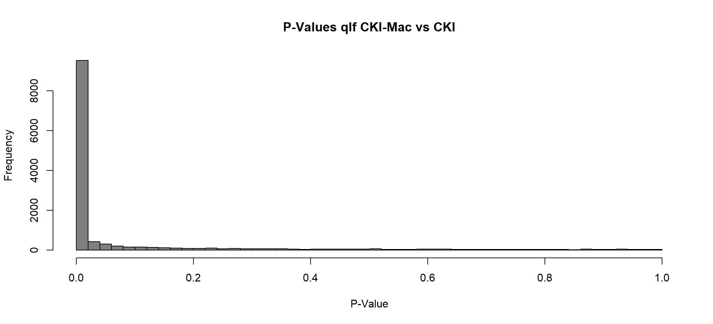 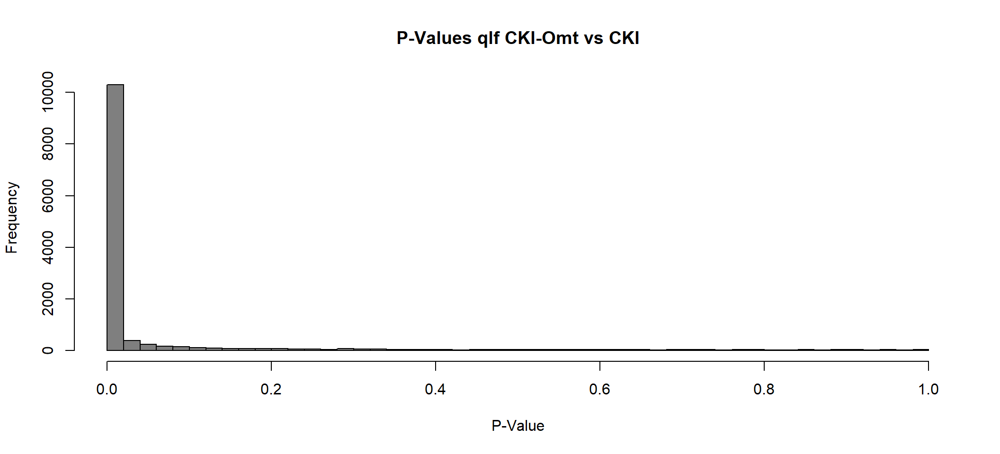
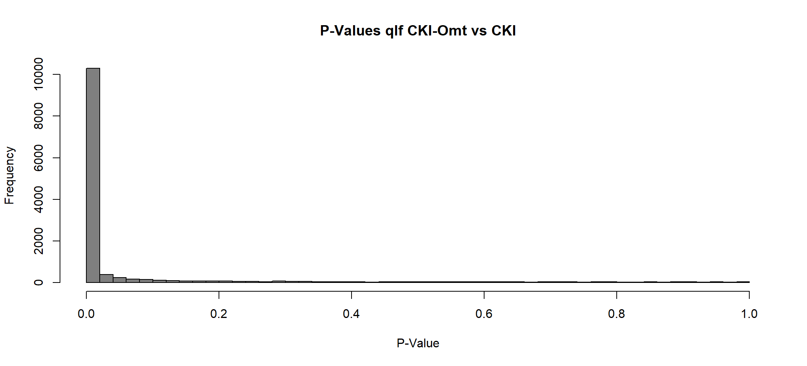 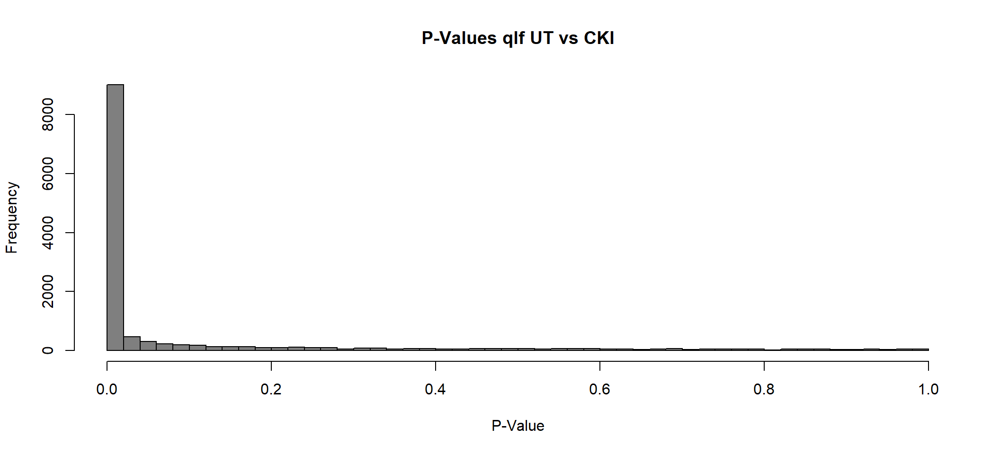
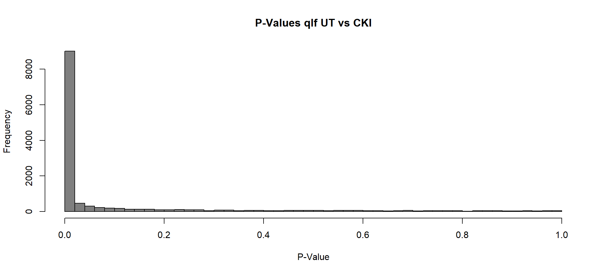
[[1]]
png
2
[[2]]
png
2
[[3]]
png
2
[[4]]
png
2
[[5]]
png
2 Mean-Difference plot
The differential expression can initial visualised through plotMD function, where the logFC is plotted against the relative abundance of the gene logCPM. Significant genes with FDR of 0.05 or less are highlighted.
NOTE: this does not account for minimal logFC value
lapply(1:length(qlf_filtered),
function(x) {
#create data.frame specific for the custome MA plot
MAplotData_qlf <- dplyr::select(as.data.frame(qlf_filtered[[x]]), logCPM, logFC, FDR)
colnames(MAplotData_qlf) <- c("baseMeanLog2", "log2FoldChange", "padj")
#create custom MA plot
MAplot_qlf <- ggpubr::ggmaplot(
data = MAplotData_qlf,
fdr = 0.05,
fc = 1.5,
genenames = as.vector(rownames(MAplotData_qlf)),
size = 1.5,
alpha = 0.8,
label.rectangle = TRUE,
palette = c("firebrick3", "dodgerblue3", "gray50"),
top = 5,
select.top.method = c("padj", "fc"),
main = "MA Plot from GLM-QLF ",
legend = "bottom",
submain = names(qlf_filtered[x]),
xlab = expression("log"[2]*"CPM"),
ylab = expression("log"[2]*"FC"),
ylim = c(-8, 8),
font.label = c(13, "italic", "gray30"),
ggtheme = ggplot2::theme_update(
plot.title = element_text(color = "gray20", size = 24, angle = 0, hjust = 0, vjust = .5, face = "bold"),
plot.subtitle = element_text(color = "gray25", size = 20, angle = 0, hjust = 0, vjust = .5, face = "plain"),
legend.title = element_text(color = "gray25", size = 16, angle = 0, hjust = 0, vjust = .5, face = "plain"),
legend.text = element_text(color = "gray25", size = 12, angle = 0, hjust = 0, vjust = .5, face = "plain"),
axis.text.x = element_text(color = "gray30", size = 12, angle = 0, hjust = .5, vjust = .5, face = "plain"),
axis.text.y = element_text(color = "gray30", size = 12, angle = 0, hjust = 1, vjust = 0, face = "plain"),
axis.title.x = element_text(color = "gray30", size = 14, angle = 0, hjust = .5, vjust = 0, face = "plain"),
axis.title.y = element_text(color = "gray30", size = 14, angle = 90, hjust = .5, vjust = .5, face = "plain")))
#save MA plot
# ggsave(paste0("MA_plot_qlf_", names(qlf_filtered[x]), ".svg"),
# plot = MAplot_qlf,
# path = "2_plots/2_dge/")
#display plot
MAplot_qlf
})[[1]]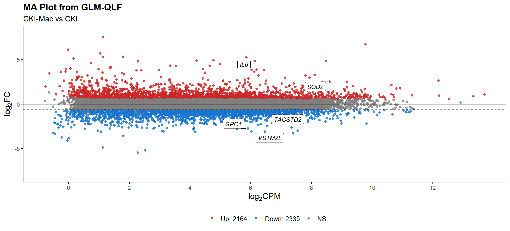
[[2]]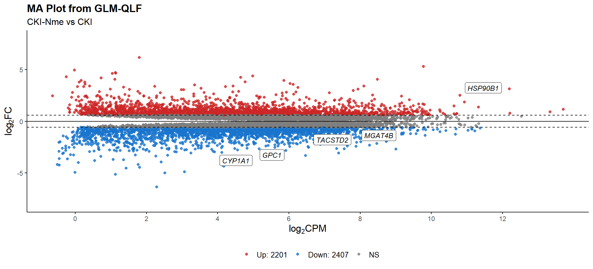
[[3]]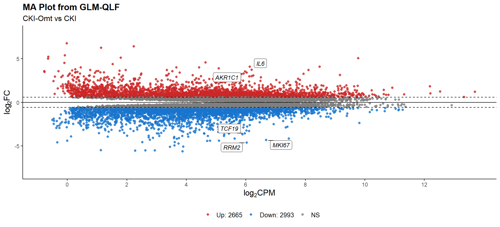
[[4]]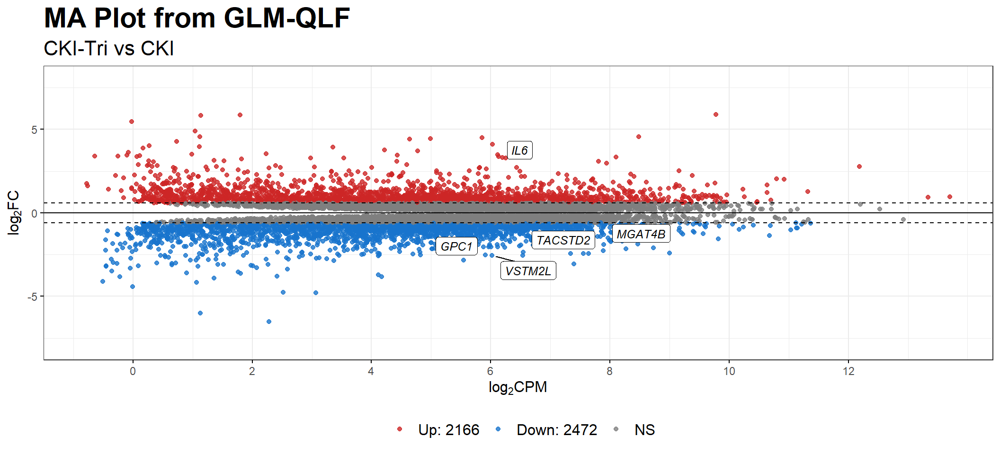
[[5]]Volcano Plot
Here the ggplot function can also be used to illustrate the DE genes significant pValue and logFC. In this instance, the significance is determined as genes with PValue < 0.05 and abs(logFC)>log(2).
lapply(1:length(qlf_filtered),
function(x) {
#add an extra column and determine whether the DE genes are significant
qlf_filtered[[x]] <- qlf_filtered[[x]] %>% as.data.frame() %>%
dplyr::mutate(Expression = case_when
(FDR <= 0.05 & logFC >= 1.5 ~ "Up-regulated",
FDR <= 0.05 & logFC <= -1.5 ~ "Down-regulated",
TRUE ~ "Insignificant"))
#adding labels to top genes
top <- 5
top_genes_qlf <- bind_rows(
qlf_filtered[[x]] %>%
filter(Expression == 'Up-regulated') %>%
arrange(FDR, desc(abs(logFC))) %>%
head(top),
qlf_filtered[[x]] %>%
filter(Expression == 'Down-regulated') %>%
arrange(FDR, desc(abs(logFC))) %>%
head(top)
)
invisible(top_genes_qlf %>% as.data.frame())
#generate volcano plot with the allDEgene data.frame
volcano_plot_qlf <- qlf_filtered[[x]] %>%
ggplot(aes(x = logFC,
y = -log(FDR, 10))) +
geom_point(aes(colour = Expression),
size = 1.5,
alpha = 0.8,
show.legend = FALSE) +
geom_label_repel(data = top_genes_qlf,
mapping = aes(logFC, -log(FDR,10), label = gene),
size = 3) +
xlab(expression("log"[2]*"FC")) +
ylab(expression("-log"[10]*"FDR")) +
xlim(-8,8)+
ylim(0,30)+
scale_color_manual(values = c("dodgerblue3", "gray50", "firebrick3")) +
guides(colour = guide_legend(override.aes = list(size=1.5))) +
labs(title = "Volcano Plot: GLM-QLF",
subtitle = paste0(names(qlf_filtered[x])),
colour = "Expression")
#save to directory
# ggsave(paste0("volcano_plot_qlf_", names(qlf_filtered[x]), ".svg"),
# plot = volcano_plot_qlf,
# path = "2_plots/2_dge/")
#display
volcano_plot_qlf
})[[1]]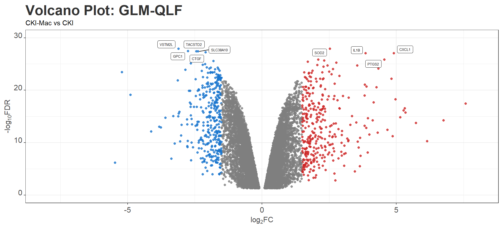
[[2]]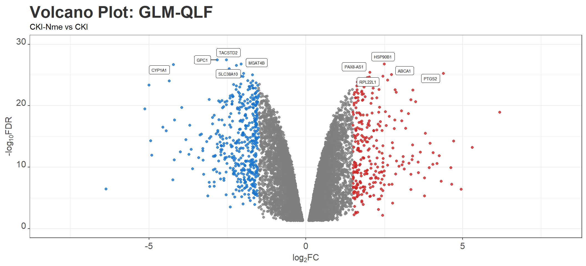
[[3]]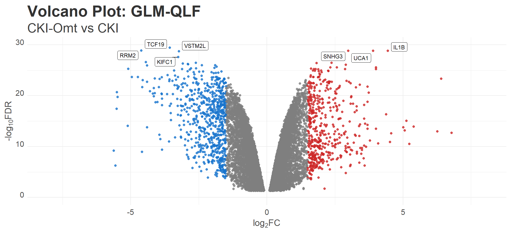
[[4]]
[[5]]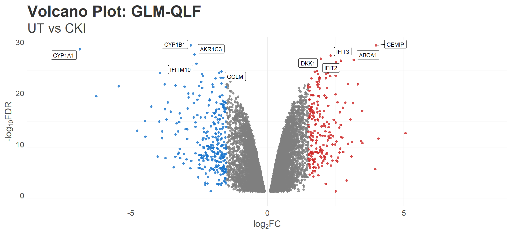
Apply TREAT
# Create list object
treat=list()
treat_decideTest=list()
treat_unfiltered=list()
treat_filtered=list()
for (i in 1:ncol(contrast)){
#at each iteration, let x = name of each contrast group
x=comparison_group[i,]
#populate list with DGELRT object for every comparison
treat[[x]] <-
edgeR::glmTreat(glmfit = fit_GLM_qlf, contrast = contrast[,x], lfc = 1.5)
#populate significant list with decide test
treat_decideTest[[x]] <- decideTests(treat[[x]], p.value = 0.05, adjust.method = "fdr") %>% summary()
#populate unfiltered list with list of all DE genes
treat_unfiltered[[x]] <-
edgeR::topTags(object = treat[[x]], n = Inf) %>% as.data.frame()
#populate filtered list with list of significant DE genes
treat_filtered[[x]] <-
edgeR::topTags(object = treat[[x]], n = Inf, adjust.method = "fdr", p.value = 0.05, sort.by = "PValue") %>% as.data.frame()
}
# save rds object for use in downstream GO and KEGG analysis
treat %>% saveRDS(file = here::here("0_data/rds_object/treat.rds"))
treat_unfiltered %>% saveRDS(file = here::here("0_data/rds_object/treat_unfiltered.rds"))
treat_filtered %>% saveRDS(file = here::here("0_data/rds_object/treat_filtered.rds"))
#save each unfiltered comparison group in the output directory
# writexl::write_xlsx(x = treat_unfiltered,
# path = here::here("3_output/treat_unfiltered.xlsx"))
writexl::write_xlsx(x = treat_filtered,
path = here::here("3_output/treat_filtered.xlsx"))Visualisation
P Value histogram
lapply(1:length(treat),
function(x){
hist(x = treat[[x]]$table$PValue,
breaks = 50,
main = paste0("P-Values treat ", names(treat[x])),
xlab = "P-Value",
col = "gray50")
invisible(dev.print(pdf, here::here(paste0("2_plots/2_dge/treat_pValue_histogram_", names(treat[x]), ".svg"))))
})


[[1]]
png
2
[[2]]
png
2
[[3]]
png
2
[[4]]
png
2
[[5]]
png
2 Mean-Difference plot
The differential expression can initial visualised through plotMD function, where the logFC is plotted against the relative abundance of the gene logCPM. Significant genes with FDR of 0.05 or less are highlighted.
NOTE: this does not account for minimal logFC value
lapply(1:length(treat_unfiltered),
function(x) {
#create data.frame specific for the custome MA plot
MAplotData_treat <- dplyr::select(as.data.frame(treat_unfiltered[[x]]), logCPM, logFC, FDR)
colnames(MAplotData_treat) <- c("baseMeanLog2", "log2FoldChange", "padj")
#create custom MA plot
MAplot_treat <- ggpubr::ggmaplot(
data = MAplotData_treat,
fdr = 0.05,
fc = 1.5,
genenames = as.vector(rownames(MAplotData_treat)),
size = 1.5,
alpha = 0.8,
label.rectangle = TRUE,
palette = c("firebrick3", "dodgerblue3", "gray50"),
top = 5,
ylim = c(-8, 8),
select.top.method = c("padj", "fc"),
main = "MA Plot from GLM-TREAT",
submain = names(treat_unfiltered[x]),
legend = "bottom",
legend.title = "Expression",
xlab = expression("log"[2]*"CPM"),
ylab = expression("log"[2]*"FC"),
font.label = c(13, "italic", "gray30"),
ggtheme = ggplot2::theme_update(
plot.title = element_text(color = "gray20", size = 24, angle = 0, hjust = 0, vjust = .5, face = "bold"),
plot.subtitle = element_text(color = "gray25", size = 20, angle = 0, hjust = 0, vjust = .5, face = "plain"),
legend.title = element_text(color = "gray25", size = 16, angle = 0, hjust = 0, vjust = .5, face = "plain"),
legend.text = element_text(color = "gray25", size = 12, angle = 0, hjust = 0, vjust = .5, face = "plain"),
axis.text.x = element_text(color = "gray30", size = 12, angle = 0, hjust = .5, vjust = .5, face = "plain"),
axis.text.y = element_text(color = "gray30", size = 12, angle = 0, hjust = 1, vjust = 0, face = "plain"),
axis.title.x = element_text(color = "gray30", size = 14, angle = 0, hjust = .5, vjust = 0, face = "plain"),
axis.title.y = element_text(color = "gray30", size = 14, angle = 90, hjust = .5, vjust = .5, face = "plain")))
#save MA plot
ggsave(filename = paste0("MA_plot_treat_", names(treat_unfiltered[x]), ".svg"),
plot = MAplot_treat,
width = 11,
height = 7,
path = here::here("2_plots/2_dge"))
#display plot
MAplot_treat
})[[1]]
[[2]]
[[3]]
[[4]]
[[5]]
Volcano Plot
Here the ggplot function can also be used to illustrate the DE genes significant pValue and logFC. In this instance, the significance is determined as genes with PValue < 0.05 and abs(logFC)>log(2).
lapply(1:length(treat_unfiltered),
function(x) {
#add an extra column and determine whether the DE genes are significant
treat_unfiltered[[x]] <- treat_unfiltered[[x]] %>% as.data.frame() %>%
dplyr::mutate(Expression = case_when
(FDR <= 0.05 & logFC >= 1.5 ~ "Up-regulated",
FDR <= 0.05 & logFC <= -1.5 ~ "Down-regulated",
TRUE ~ "Insignificant"))
#adding labels to top genes
top <- 5
top_genes_treat <- bind_rows(
treat_unfiltered[[x]] %>%
filter(Expression == 'Up-regulated') %>%
arrange(FDR, desc(abs(logFC))) %>%
head(top),
treat_unfiltered[[x]] %>%
filter(Expression == 'Down-regulated') %>%
arrange(FDR, desc(abs(logFC))) %>%
head(top)
)
invisible(top_genes_treat %>% as.data.frame())
#generate volcano plot with the allDEgene data.frame
volcano_plot_treat <- treat_unfiltered[[x]] %>%
ggplot(aes(x = logFC,
y = -log(FDR, 10))) +
geom_point(aes(colour = Expression),
size = 1.5,
alpha = 0.8,
show.legend = FALSE) +
geom_label_repel(data = top_genes_treat,
mapping = aes(logFC, -log(FDR,10), label = gene),
size = 3) +
xlab(expression("log"[2]*"FC")) +
ylab(expression("-log"[10]*"FDR")) +
xlim(-8,8)+
ylim(0,30)+
scale_color_manual(values = c("dodgerblue3", "gray50", "firebrick3")) +
guides(colour = guide_legend(override.aes = list(size=1.5))) +
labs(title = "Volcano Plot: GLM-TREAT",
subtitle = paste0(names(treat_unfiltered[x])),
colour = "Expression")
#save to directory
ggsave(paste0("volcano_plot_treat_", names(treat_unfiltered[x]), ".svg"),
plot = volcano_plot_treat,
width = 11,
height = 7,
path = here::here("2_plots/2_dge/"))
#display
volcano_plot_treat
})[[1]]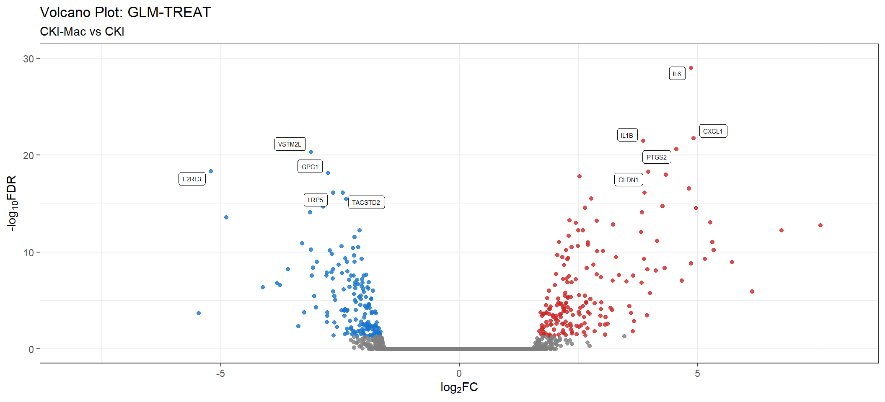
[[2]]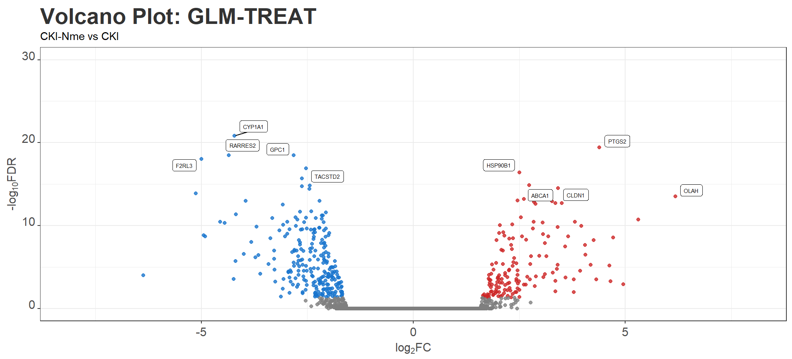
[[3]]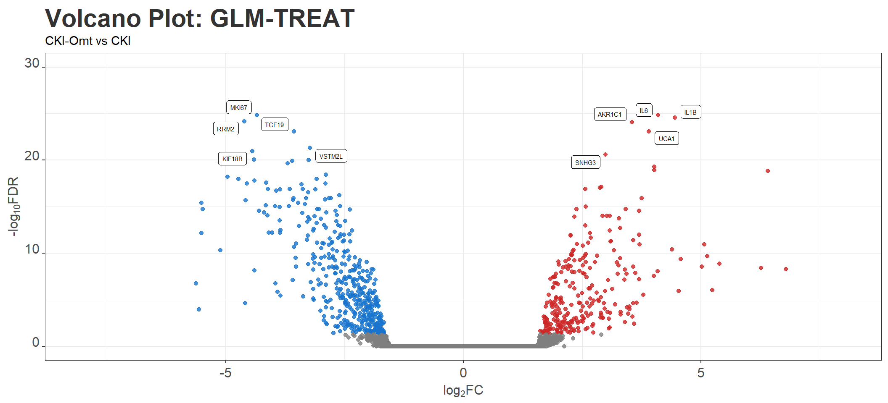
[[4]]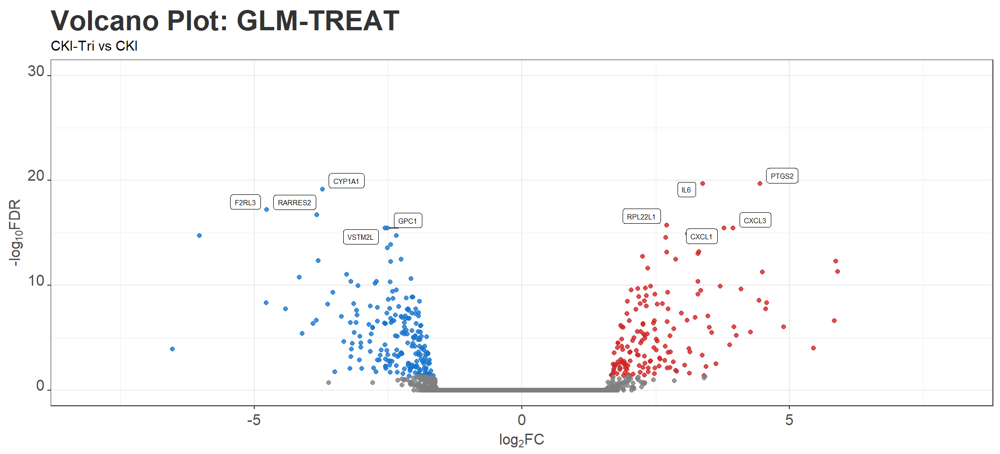
[[5]]
Heatmap
p53_treat_UTvsCKI <-
treat_unfiltered$UTvsCKI$table[treat_unfiltered$UTvsCKI$table$gene_id %in% p53_ensembl_id$ENSEMBL_GENE_ID,c("gene_name", "logFC")]
p53_treat_CKIvsMAC <-
treat_unfiltered$CKIvsMac$table[treat_unfiltered$CKIvsMac$table$gene_id %in% p53_ensembl_id$ENSEMBL_GENE_ID,
"logFC"] %>% as.data.frame()
p53_treat <- c(p53_treat_UTvsCKI, p53_treat_CKIvsMAC)
remove_rownames() %>%
column_to_rownames("gene_name")
colnames(p53_treat_UTvsCKI_test) <- "UT vs CKI"
my_palette <- colorRampPalette(c("dodgerblue3", "white", "firebrick3"))(n = 201)
pheatmap(mat = logCPM, cluster_rows = TRUE, cluster_cols = FALSE, color = my_palette, border_color = NA)
coolmap(x = logCPM,
margins=c(7,7), lhei=c(1,5), lwid=c(1,3))
sessionInfo()R version 4.1.0 (2021-05-18)
Platform: x86_64-w64-mingw32/x64 (64-bit)
Running under: Windows 10 x64 (build 19043)
Matrix products: default
locale:
[1] LC_COLLATE=English_Australia.1252 LC_CTYPE=English_Australia.1252
[3] LC_MONETARY=English_Australia.1252 LC_NUMERIC=C
[5] LC_TIME=English_Australia.1252
attached base packages:
[1] grid stats graphics grDevices utils datasets methods
[8] base
other attached packages:
[1] Glimma_2.2.0 edgeR_3.34.0 limma_3.48.1 ggrepel_0.9.1
[5] ggbiplot_0.55 scales_1.1.1 plyr_1.8.6 ggpubr_0.4.0
[9] pheatmap_1.0.12 cowplot_1.1.1 pander_0.6.4 kableExtra_1.3.4
[13] forcats_0.5.1 stringr_1.4.0 purrr_0.3.4 tidyr_1.1.3
[17] ggplot2_3.3.5 tidyverse_1.3.1 reshape2_1.4.4 tibble_3.1.2
[21] readr_2.0.0 magrittr_2.0.1 dplyr_1.0.7
loaded via a namespace (and not attached):
[1] readxl_1.3.1 backports_1.2.1
[3] workflowr_1.6.2 systemfonts_1.0.2
[5] splines_4.1.0 BiocParallel_1.26.1
[7] GenomeInfoDb_1.28.4 digest_0.6.27
[9] htmltools_0.5.2 fansi_0.5.0
[11] memoise_2.0.0 tzdb_0.1.2
[13] openxlsx_4.2.4 Biostrings_2.60.1
[15] annotate_1.70.0 modelr_0.1.8
[17] matrixStats_0.60.1 svglite_2.0.0
[19] colorspace_2.0-2 blob_1.2.2
[21] rvest_1.0.2 haven_2.4.3
[23] xfun_0.24 crayon_1.4.1
[25] RCurl_1.98-1.3 jsonlite_1.7.2
[27] genefilter_1.74.0 survival_3.2-11
[29] glue_1.4.2 gtable_0.3.0
[31] zlibbioc_1.38.0 XVector_0.32.0
[33] webshot_0.5.2 DelayedArray_0.18.0
[35] car_3.0-11 BiocGenerics_0.38.0
[37] abind_1.4-5 DBI_1.1.1
[39] rstatix_0.7.0 Rcpp_1.0.6
[41] viridisLite_0.4.0 xtable_1.8-4
[43] foreign_0.8-81 bit_4.0.4
[45] stats4_4.1.0 htmlwidgets_1.5.4
[47] httr_1.4.2 RColorBrewer_1.1-2
[49] ellipsis_0.3.2 farver_2.1.0
[51] pkgconfig_2.0.3 XML_3.99-0.6
[53] sass_0.4.0 dbplyr_2.1.1
[55] here_1.0.1 locfit_1.5-9.4
[57] utf8_1.2.1 labeling_0.4.2
[59] tidyselect_1.1.1 rlang_0.4.11
[61] later_1.2.0 AnnotationDbi_1.54.1
[63] munsell_0.5.0 cellranger_1.1.0
[65] tools_4.1.0 cachem_1.0.5
[67] cli_3.0.1 generics_0.1.0
[69] RSQLite_2.2.7 broom_0.7.9
[71] evaluate_0.14 fastmap_1.1.0
[73] yaml_2.2.1 knitr_1.36
[75] bit64_4.0.5 fs_1.5.0
[77] zip_2.2.0 KEGGREST_1.32.0
[79] whisker_0.4 xml2_1.3.2
[81] compiler_4.1.0 rstudioapi_0.13
[83] curl_4.3.2 png_0.1-7
[85] ggsignif_0.6.3 reprex_2.0.1
[87] statmod_1.4.36 geneplotter_1.70.0
[89] bslib_0.3.1 stringi_1.6.2
[91] highr_0.9 lattice_0.20-44
[93] Matrix_1.3-3 vctrs_0.3.8
[95] pillar_1.6.4 lifecycle_1.0.1
[97] jquerylib_0.1.4 data.table_1.14.0
[99] bitops_1.0-7 httpuv_1.6.1
[101] GenomicRanges_1.44.0 R6_2.5.1
[103] promises_1.2.0.1 rio_0.5.27
[105] writexl_1.4.0 IRanges_2.26.0
[107] assertthat_0.2.1 SummarizedExperiment_1.22.0
[109] DESeq2_1.32.0 rprojroot_2.0.2
[111] withr_2.4.2 S4Vectors_0.30.0
[113] GenomeInfoDbData_1.2.6 parallel_4.1.0
[115] hms_1.1.1 rmarkdown_2.11
[117] MatrixGenerics_1.4.3 carData_3.0-4
[119] git2r_0.28.0 Biobase_2.52.0
[121] lubridate_1.7.10